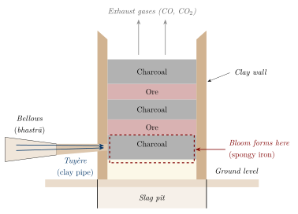
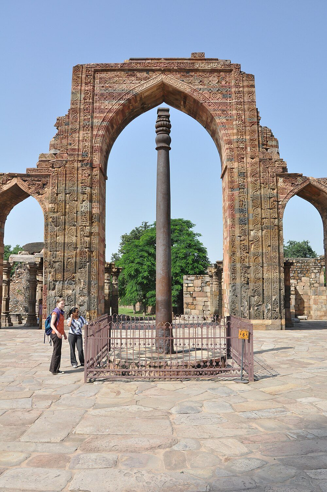

Chapter 5: Loha: Iron and the Delhi Pillar¶
5.1 Iron in South Asian History¶
Iron (Sanskrit ayas, later loha, kṛṣṇāyas) transformed the economies of South Asia, as it did elsewhere, in the first millennium BCE: iron axes, ploughshares, sickles and weapons accompanied the expansion of farming and of cities in the Ganga plain and the Deccan. From then until the 19th century, iron was smelted throughout the subcontinent in small charcoal-fuelled furnaces by specialist communities, and Indian smiths produced both ordinary wrought iron and, in some regions, high-quality steel (Chakrabarti 1992; Agrawal 2000).
Three features of the Indian iron tradition stand out. Iron working began early, and probably independently of developments in western Asia. Smiths were able to forge-weld large masses of bloomery iron into objects weighing several tonnes, of which the Delhi pillar is the most famous. And in south India and Sri Lanka, iron was converted into high-carbon crucible steel, the subject of Chapter 6.
5.2 The Beginnings of Iron¶
Until the 1990s it was usual to date the beginning of iron in India to about 1000 BCE and to associate it with the Painted Grey Ware culture of the Ganga plain. Radiocarbon dates from several sites have since pushed the beginnings back. Rakesh Tewari’s excavations at Malhar, Raja Nal-ka-tila and Dadupur in Uttar Pradesh yielded iron objects and smelting debris in levels dated to the early second millennium BCE, perhaps from about 1800 BCE (Tewari 2003). In the southern Deccan, sites such as Hallur and Komaranahalli in Karnataka have iron in levels of the late second millennium BCE. These early dates have been debated—over the calibration and context of the samples, and over whether small quantities of iron indicate regular smelting—but most specialists now accept that iron working in South Asia began in the second millennium BCE and developed largely independently of that of western Asia (Chakrabarti 1992; Agrawal 2000). Table 5.1 lists some of the key sites.
| Site | Region | Date (approx.) | Evidence |
|---|---|---|---|
| Malhar, Raja Nal-ka-tila, Dadupur | Uttar Pradesh | early–mid 2nd mill. BCE | Iron objects, slag, furnace remains |
| Hallur, Komaranahalli | Karnataka | late 2nd mill. BCE | Iron objects |
| Atranjikhera | Uttar Pradesh | late 2nd–early 1st mill. BCE | Iron objects and slag |
| Painted Grey Ware sites | Ganga–Yamuna plain | c. 1200–600 BCE | Iron tools and weapons |
| Megalithic burials | Deccan and south India | 1st mill. BCE | Abundant iron weapons and tools |
| Kodumanal | Tamil Nadu | late centuries BCE | Iron smelting; crucible steel |
In January 2025 the Tamil Nadu State Department of Archaeology published radiocarbon (AMS) dates on charcoal and luminescence dates on pottery from sites in Tamil Nadu, notably Sivagalai, which it interpreted as showing the use of iron in the fourth millennium BCE (Rajan and Sivanantham 2025). If confirmed, these dates would be by far the earliest for iron anywhere. They have attracted considerable public debate, and their acceptance will depend on publication of the full data in a peer-reviewed form, independent dating and close scrutiny of the association between the dated samples and the iron objects. Until then they should be treated as a claim under review.
5.3 Iron and the Early Historic World¶
5.3.1 Iron and the Second Urbanisation¶
In the middle of the first millennium BCE cities and states grew up again in the Ganga plain—the “second urbanisation” after the Harappan cities. An influential argument, associated especially with the historian R. S. Sharma, held that iron tools made this possible, by allowing the clearing of the dense forests of the middle Ganga plain and the cultivation of its heavy soils. Archaeologists such as D. K. Chakrabarti have criticised this view: iron appears in the region well before the cities, the forests were probably less dense than supposed, and fire and copper tools could clear land. Most scholars now see iron as one of several factors—alongside rice cultivation, population growth, trade and political change—rather than as the single cause of urbanisation (Chakrabarti 1992).
5.3.2 Iron in the Megalithic South¶
In the Deccan and south India the first millennium BCE is the period of the “megalithic” burials—stone circles, cists and urn burials—which contain great quantities of iron objects: swords, daggers, spearheads, arrowheads, axes, sickles, hoes, tripods, lamp-hangers and horse-bits. The quantity and variety of these grave goods show that iron working was well established and widely practised, and they include some of the earliest high-carbon iron and steel in South Asia (Agrawal 2000; Srinivasan and Ranganathan 2004). Settlements of the period, such as Kodumanal in Tamil Nadu, have yielded evidence for smelting and smithing as well as for crucible steel.
5.3.3 Iron in the State¶
In the Arthaśāstra, the superintendent of metals runs workshops for iron among other metals, and the armoury supplies iron weapons and tools; iron is listed among the “forest products” and mineral resources that the state controls (Olivelle 2013). Buddhist and Jain texts mention smiths (kammāra in Pali) as a recognised occupation; the Buddha’s last meal, according to the Pali canon, was given by Cunda, a smith’s son. By the early centuries CE iron was the ordinary metal of agriculture, carpentry and war throughout the subcontinent.
5.4 Smelting in the Bloomery Furnace¶
Before modern blast furnaces, iron in India was made by the bloomery process. Iron ore and charcoal were charged into a small clay shaft furnace, and air was blown in with hand- or foot-operated bellows (bhastrā) through clay pipes (tuyères). The carbon monoxide produced by the burning charcoal reduced the iron oxide to metallic iron at temperatures well below its melting point, and the iron collected as a spongy, slag-laden lump, the bloom, which was then repeatedly reheated and hammered to expel the slag and consolidate the metal (Figure 5.1).

The main reactions are the reduction of iron oxide by carbon monoxide, for example
and the formation of a fluid slag (largely iron silicate) from the gangue of the ore, which carries away impurities but also consumes some of the iron. Bloomery iron is usually low in carbon, contains slag inclusions, and in South Asia often has a relatively high phosphorus content derived from the ores.
5.4.1 Wind-Powered Furnaces in Sri Lanka¶
Gill Juleff’s work at Samanalawewa in southern Sri Lanka revealed a different solution: rows of furnaces built along the crests of hills facing the strong monsoon winds, which supplied the air blast without bellows. Dated to the later first millennium CE, these furnaces produced high-carbon iron and show how closely South Asian smelters adapted their technology to local conditions (Juleff 1996, 1998).
5.5 The Delhi Iron Pillar¶
The iron pillar standing in the Quwwat al-Islām mosque in the Qutb complex at Mehrauli, Delhi, is the best known iron object from ancient India (Figure 5.2). It is about 7.2 m long, of which roughly a metre is below ground, tapers from about 42 cm in diameter at the base to about 30 cm below the capital, and weighs more than six tonnes (Balasubramaniam 2002; Anantharaman 1996).


5.5.1 Date and Inscription¶
A Sanskrit inscription in Gupta-period Brāhmī on the pillar records that it was set up as a standard (dhvaja) of Viṣṇu on a hill called Viṣṇupada by a king named Candra. On the basis of the script and the content, most historians identify Candra with the Gupta emperor Candragupta II (r. c. 375–415 CE), and date the pillar to around 400 CE. The inscription is a eulogy in verse. It praises the king’s victories—over enemies who had united against him in Vaṅga (Bengal), and over the Vāhlīkas after crossing the seven mouths of the Indus—and speaks of his sole sovereignty over the earth; some scholars read it as composed after the king’s death. The identification with Candragupta II rests on the palaeography and the historical fit rather than on an explicit dynastic name. The pillar was not made for its present site. Its original location is uncertain—Balasubramaniam argued for Udayagiri near Vidisha in central India—and it was moved to Delhi in the medieval period, probably in the 11th to 13th centuries (Balasubramaniam 2002).
5.5.2 Manufacture¶
The pillar was made by forge-welding: lumps of bloomery iron were heated and hammered together, piece by piece, to build up the column. Weld lines and slag inclusions visible in the metal confirm this. How exactly the smiths handled a growing mass of several tonnes is still debated; it would have required many furnaces, a large team, and great skill in keeping the welding surfaces clean and hot (Balasubramaniam 2002).
5.5.3 Why It Has Corroded So Little¶
The pillar is famous because, after some sixteen centuries in the open, it shows little rust. Many explanations were once proposed, from a coating of ghee to a “lost” metallurgy. Research over the 20th century, culminating in the work of R. Balasubramaniam of IIT Kanpur, has explained the phenomenon in ordinary scientific terms (Balasubramaniam 2000, 2002).
-
Composition. The iron is very low in carbon and sulphur but has a relatively high phosphorus content (around 0.1 per cent or more in different analyses), derived from the ore and the smelting process. In modern steels phosphorus is avoided, but in wrought iron exposed to the atmosphere it promotes the formation of a protective surface layer.
-
A protective film. Analysis of the surface layer shows, next to the metal, a compact amorphous layer of iron oxyhydroxide (\(\delta\)-FeOOH, misawite) and, within the rust, crystalline iron hydrogen phosphate hydrate. Phosphorus catalyses the formation of this dense, adherent layer, which slows further corrosion greatly. Slag particles in the metal may also contribute.
-
Environment. Delhi’s climate, with long dry periods and a pattern of alternate wetting and drying, favours the formation of the protective layer, and the relative humidity is high enough for corrosion only for part of the year.
The explanation was reached gradually. Robert Hadfield’s analysis in 1912 established the pillar’s low carbon and sulphur and relatively high phosphorus (Hadfield 1912). Through the middle of the 20th century, investigators variously emphasised the purity of the iron, the dry climate of Delhi, the slag particles in the metal, or the protective effect of the pillar’s surface film, and popular writers added explanations of their own. T. R. Anantharaman’s The Rustless Wonder summarised the debate in the 1990s (Anantharaman 1996). Balasubramaniam’s detailed characterisation of the surface layers, published from 2000 onwards, combined these elements into a coherent mechanism and is now the standard account (Balasubramaniam 2000, 2002). The episode is a good example of how a historical object can become a research problem in modern materials science.
The pillar is therefore not “rustless”. It corrodes, but very slowly, and the part that was buried in the ground, where it was damp, corroded more. Its durability is the result of a particular iron composition interacting with a particular environment, an outcome that its makers achieved without, of course, understanding the mechanism. Balasubramaniam’s studies are also of practical interest to corrosion scientists working on weathering steels.
5.6 Other Large Iron Objects¶
The Delhi pillar is not unique. Other large forge-welded iron objects include (Balasubramaniam 2002):
- The Dhar pillar
- At Dhar in Madhya Pradesh, a forge-welded iron pillar now in three pieces, usually attributed to the Paramāra period (c. 11th century). Its original length was greater than that of the Delhi pillar.
- The Kodachadri pillar
- A smaller iron pillar at a temple on Kodachadri hill in Karnataka.
- Temple beams
- Large forge-welded iron beams were used in temples at Puri and Konark in Odisha (12th–13th centuries).
- Forge-welded cannon
- Early modern rulers commissioned large wrought-iron guns, built up from forge-welded bars and rings; examples survive at Thanjavur, Bishnupur and elsewhere.
5.7 Iron in the Medieval and Early Modern Economy¶
Between the Delhi pillar and the colonial period, iron was produced across the subcontinent by thousands of small furnaces. The demand came from agriculture (ploughshares, sickles, hoes), building (clamps, nails and, in some temples, beams), transport (tyres and fittings), and above all war. The armies of the Sultanates, the Vijayanagara empire, the Mughals and their successors consumed iron and steel for swords, spears, arrowheads, armour, horse equipment and, from the 16th century, guns and shot.
Mughal administrative sources describe imperial workshops (kārkhānas) for arms and other goods, and the Āʾīn-i Akbarī gives an account of the imperial arsenal and of the making of matchlock barrels. Earlier barrels, it says, had been made by flattening iron and welding the edges together, and often burst; the method it credits to Akbar’s workshops was to twist a flattened strip of iron obliquely into a roll, so that the folds overlapped, and to weld them gradually in the fire (Āʾīn 1.37) (Abuʾl-Faẓl ʿAllāmī 1873). Large guns were made either by forge-welding, like the wrought-iron cannon mentioned above, or by casting in bronze; the great bronze guns of the Deccan sultanates are among the largest pre-modern cannon in the world (Khan 2004).
The scale of production was considerable. When British surveyors and geologists examined indigenous iron-making in the 19th century, they found furnaces in operation in central India, the Deccan, the eastern hills, the Himalaya and the south, with regional differences in furnace design, ores and fuels. Their reports, together with Elwin’s ethnography, are the main record of a technology that was disappearing as they wrote (Elwin 1942; Biswas and Biswas 1996).
5.8 Iron in the Texts¶
The later Vedic texts distinguish a “dark” metal, iron, from copper (Chapter 1), and the Arthaśāstra’s interest in iron has been noted above. The Periplus of the Erythraean Sea (1st century CE) records Indian iron and steel among the goods shipped from western India to the Red Sea (Chapter 6) (Casson 1989).
The rasa texts, interested in iron mainly as a medicine, classify it into three main kinds, muṇḍa, tīkṣṇa and kānta, each with sub-varieties. Tīkṣṇa (“sharp”) is generally understood as steel. Kānta is associated with the lodestone (ayaskānta, “beloved of iron”) and is praised as the best kind; muṇḍa is the ordinary or inferior iron. Attempts to equate the three exactly with modern wrought iron, steel and cast iron are not secure, since the texts’ descriptions mix physical and medicinal qualities (Ray 1956; Biswas and Biswas 1996).
5.9 Iron-Smelting Communities¶
Iron smelting continued in many parts of India into the 20th century, carried on by specialist groups such as the Agaria of central India, the Asur of Jharkhand, the Lohar of many regions and smith castes in the south. Verrier Elwin’s The Agaria (1942) is the classic ethnography (Elwin 1942). It describes small clay shaft furnaces worked with paired bellows, the separation of the bloom and its forging, and the rich mythology that surrounded the work: the furnace as a living being, the iron spirit Lohasur to whom offerings were made, and the myths that explained why the Agaria worked iron. Elwin also documented their poverty and the pressures on their craft from forest restrictions and imported iron.
Historical Note: The Decline of Indigenous Iron
During the 19th century traditional iron smelting in India declined sharply. Cheap imported British iron and steel undercut the local product; forest laws restricted the cutting of wood for charcoal; and the new railway and colonial markets favoured standardised factory iron. Modern iron and steel making in India began with colonial-era ventures and, decisively, with the Tata Iron and Steel Company at Jamshedpur (production from 1912). The knowledge of the village smelters survives today mainly in ethnographic records and in a few demonstration revivals (Elwin 1942; Biswas and Biswas 1996).
5.10 Iron in the North-East: The Khasi Hills¶
The iron industry of the Khasi Hills in Meghalaya is one of the best documented outside the peninsula. Its ore is described as the fine grains of magnetite released by the weathering of the local rock: the iron-bearing sand was washed out of the decomposed rock in running water, concentrated, and smelted with charcoal in small bloomery furnaces worked with bellows. The British officer Henry Yule described the industry in 1842, when Khasi iron was still traded down to the Sylhet plain (Yule 1842); the trade seems to have dwindled later in the century, as imported iron became cheap in the plains.
Modern fieldwork has given the industry a depth that the 19th-century accounts could not. Paweł Prokop and Ireneusz Suliga dated charcoal embedded in slag heaps on the plateau by radiocarbon and found a sequence of smelting covering roughly the last two thousand years; the oldest dated slag layer, at about 2040 \(\pm\) 80 radiocarbon years before present (calibrated to between about 350 BCE and 130 CE), is the earliest smelting site so far dated in the region (Prokop and Suliga 2013). The minerals of the slag—wüstite, fayalite, glass and droplets of metallic iron—are those of a bloomery process. The authors argue that the industry was probably of local origin, given the isolation of the plateau, while allowing that knowledge may have come from outside. Two thousand years of charcoal-fuelled smelting on the plateau imply a long demand on its woodland, of the kind discussed in Section 4.6.1.
The Khasi case matters for the wider history in two ways. It shows that iron-making in the hills of the north-east was neither late nor derivative of the Ganga plain, and that a technology based on placer magnetite rather than on lumpy ore could sustain a regional trade for centuries. And it shows how much remains to be done: comparable surveys of the iron-smelting traditions of the Naga, Mizo and other hill peoples, and of the Himalayan valleys, have hardly begun.
5.11 Making Steel from Iron¶
Indian smiths knew several ways of making steel (tīkṣṇa loha), that is, iron with enough carbon to be hardened by quenching:
-
In the bloomery: by adjusting the ratio of charcoal to ore and the air blast, some smelters produced a higher-carbon bloom or steely parts of a bloom.
-
By carburisation: heating wrought iron in contact with charcoal, so that carbon diffused into the surface.
-
In the crucible: melting iron with carbonaceous matter in a sealed crucible to produce a homogeneous high-carbon steel—the crucible or “wootz” steel described in the next chapter.
-
By decarburising cast iron: high-carbon iron produced in some furnaces could be decarburised, and some south Indian and Sri Lankan crucible processes appear to have combined these approaches (Srinivasan and Ranganathan 2004; Juleff 1998).
5.12 Iron in Medicine¶
Iron has been used in Āyurveda since the classical compendia, which prescribe iron filings and iron leaves heated and quenched in plant decoctions, notably for pāṇḍu, a condition of pallor that includes what is now recognised as anaemia. The rasa texts add elaborate methods for preparing calcined iron (loha bhasma or lauha bhasma), discussed in Chapter 9.
Iron deficiency is a real and common cause of anaemia, and iron given in a suitable form is an effective treatment; it is therefore plausible that iron preparations helped some patients. That does not establish that any particular traditional preparation is effective or safe. Iron in excess is itself toxic—iron overdose is a well-known cause of poisoning in children—and traditional iron preparations sold today may contain other metals. Claims that loha bhasma works better or more safely than standard iron supplements have not been established by adequate trials.
Health and Safety Note
Iron is dangerous in excess, and traditionally prepared iron medicines may also contain other metals. Anaemia has several causes and needs a doctor’s diagnosis. No procedures or doses are given; see the full note in Section 1.1.
What Is Secure and What Is Debated
Secure: iron was made in South Asia from the second millennium BCE in small bloomery furnaces, and by wind-blown furnaces in Sri Lanka; the Delhi pillar (c. 400 CE) is forge-welded wrought iron whose slow corrosion is explained by its composition, its protective film and the climate; Khasi smelting goes back some two thousand years. Debated: how early regular smelting began, and above all the fourth-millennium dates announced in Tamil Nadu in 2025; the identification of the pillar’s Candra with Candragupta II, which rests on script and historical fit; and the weight of the several causes of the 19th-century decline.